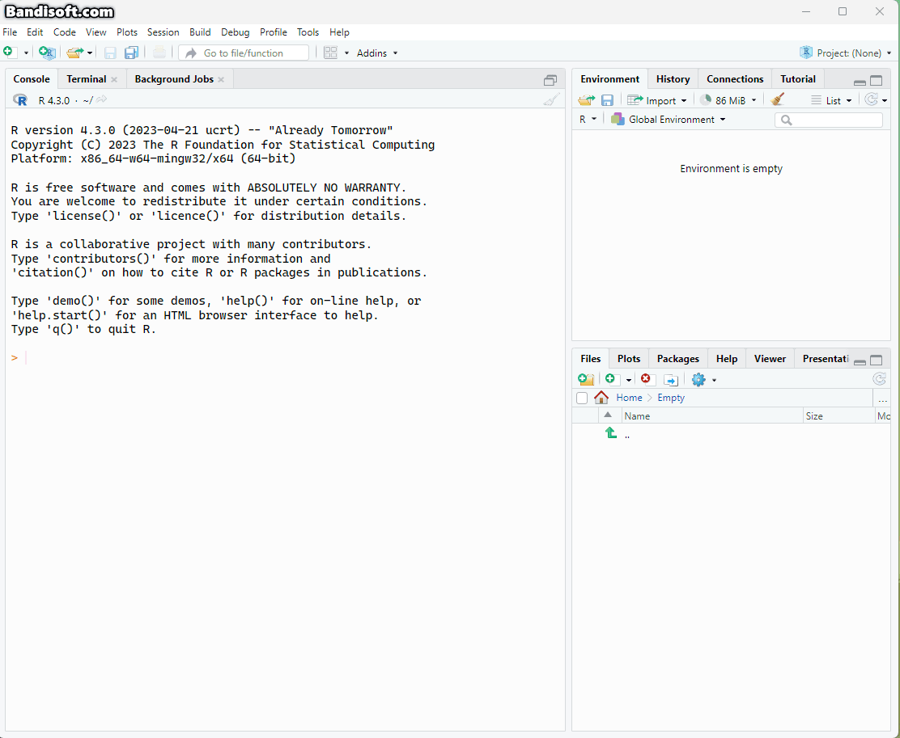
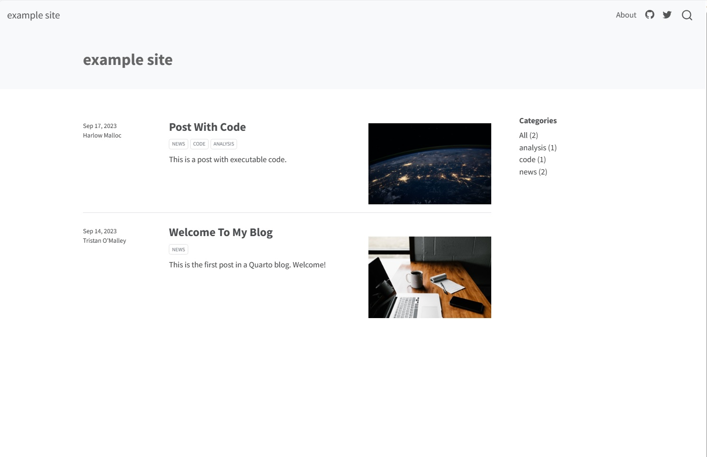
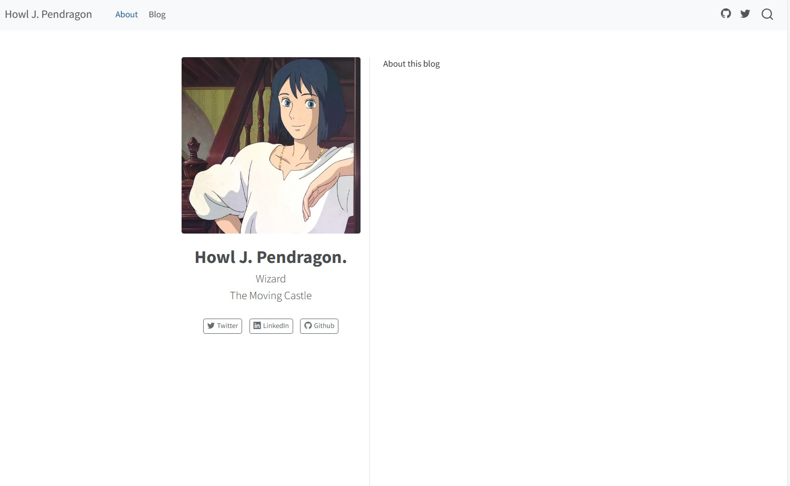
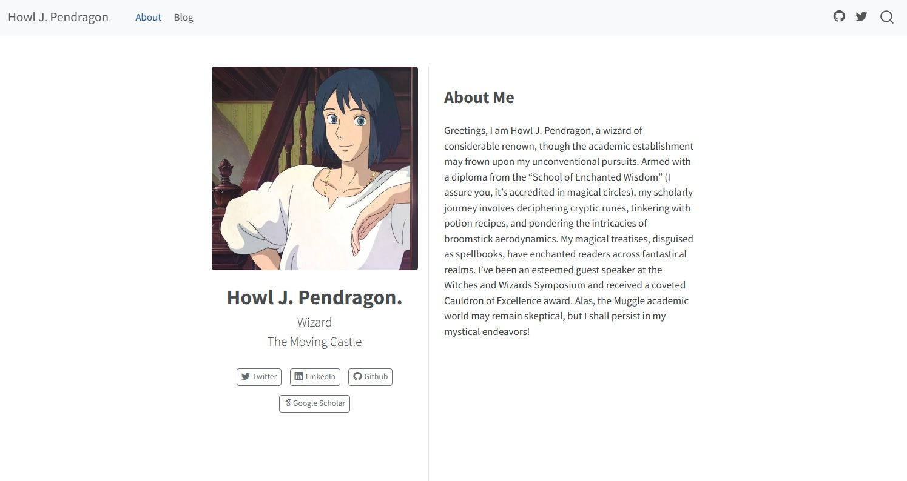
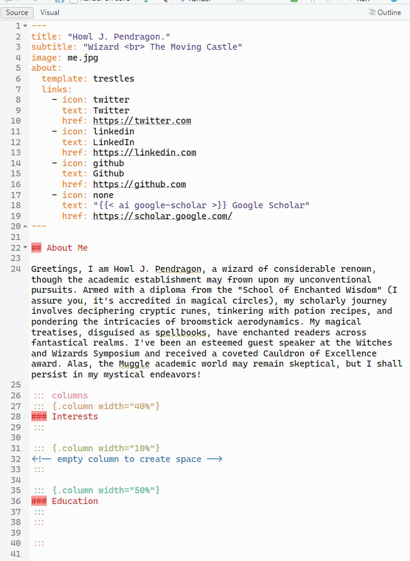
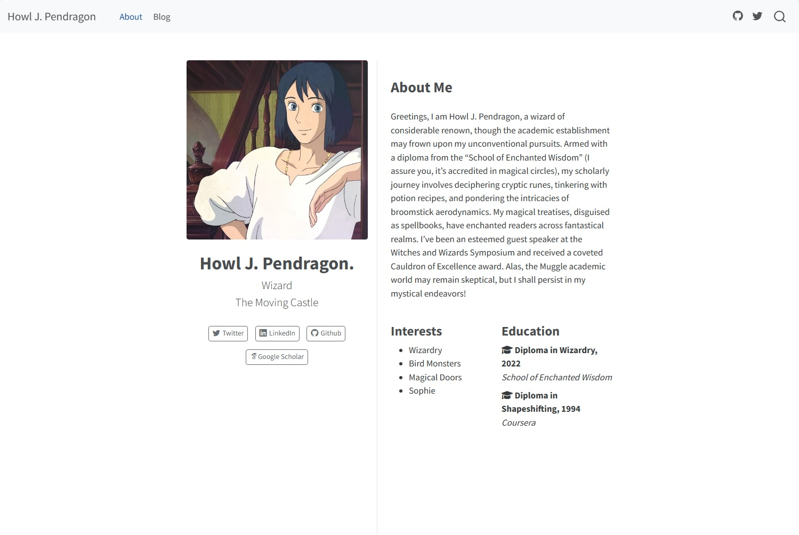
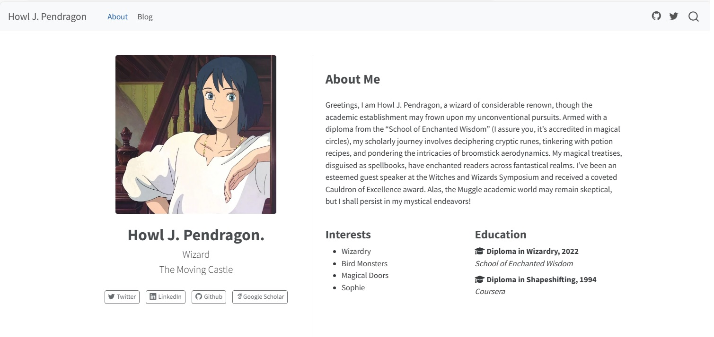
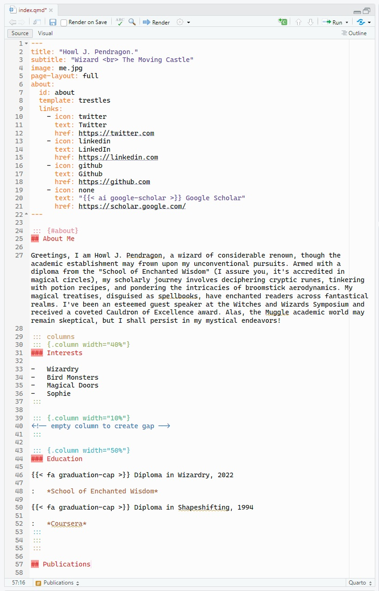
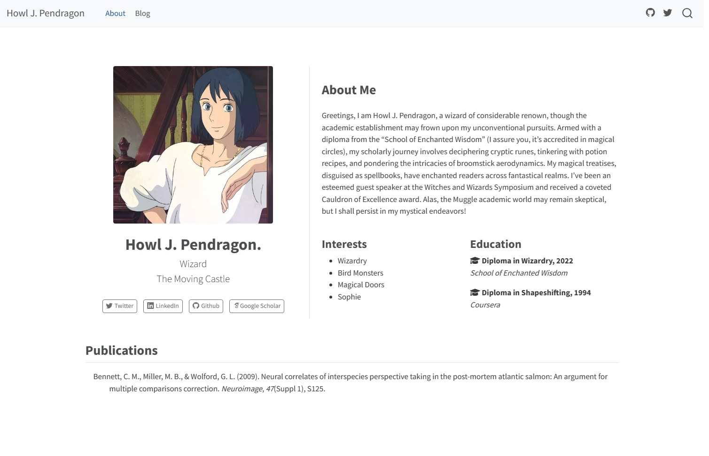
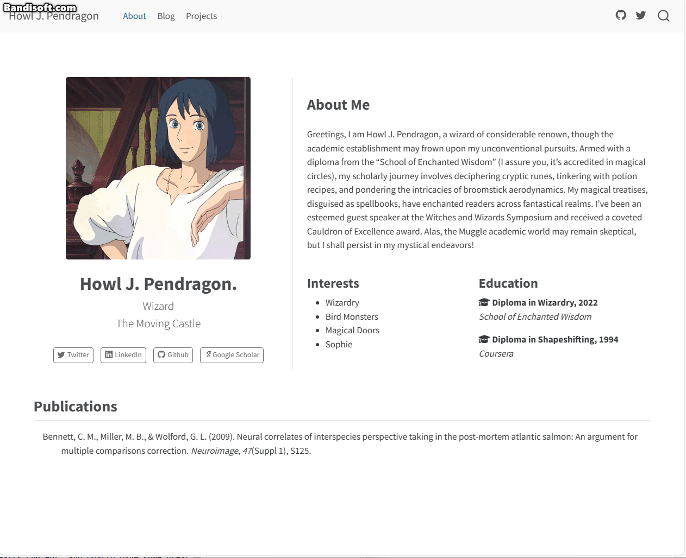

Making an Academic Website in Quarto
For years a lot of academics have been building websites usinng the Hugo Academic template, including myself. However it is not the simplest to use, and in my opinion the recent changes to how it works made it a bit more effort than it was worth. Given I have been migrating most of my workflow over to Posit’s new Quarto ecosystem I wondered if I could create a simple website to achieve a similar feel to Hugo Academic. You can even make it look quite similar with some simple CSS/HTML tweaks. So this is a guide on how to create a simple, clean academic website in Quarto.
One quick note- for this tutorial we will mainly use the Source editor to edit our files, but using the Visual editor is also fine. If you don’t know what I am talking about, at the top left of the RStudio window you can switch between source code, and semi-rendered markdown for editing .qmd files. Some of the stuff we will do doesn’t render in Visual, so we will mainly use Source.
Getting Started
So we will be using Quarto to build our website. Installing it is super easy and an installation guide can be found here. I’ll be using RStudio for this example but all of this can also be done using other tools (I typically use VS Code) and these are also covered in the above link.
Creating a project
To get started we will need to create a blank project. Projects are a nice tidy way to keep related files collected together in their own directory. However, instead of the Quarto Website project template, We will use the Quarto Blog format. This is just a special case of the website, and i’ll show you how you can turn off the blog part if you want. To create this project go to:
File -> New Project… -> New Diectory -> Quarto Blog
If you use renv and/or git you can tick those options. Indeed, to host my website I use Git so for me that is necessary, but there are other ways to host the site if you don’t want to do it that way.

Our website
We now have a website. Job done. Well, almost. You now have a couple of folders and files in your directory. The important ones right now are:
_quarto.yml - this is the main settings and contents page for your website.
index.qmd - this is the landing page for your site (currently this contains the blog)
about.qmd this is another page for your website, currently the about section.
<posts This is a folder containing some more .qmd files. These are the blogposts.
You can now preview what this looks like. If you have one of the documents open you can type the following in the terminal at the bottom of RStudio (not the console, the terminal!):
quarto publish
You should see something like this:

As you can see we have a homepage with some blog articles and an about page and some links at the top right. We can now go and make it look a bit more of a normal website.
Website Structure
The first thing we will do is move the blog to a separate blog page. To do this we open index.qmd, we then save it as blog.qmd (you can also change the title at the top of the file here to blog). We will then delete index.qmd and rename about.qmd to index.qmd. This leaves us with blog.qmd (our original index) and index.qmd (our original about). This has made our About page the homepage, and put the blog on its own separate page.
We can now sort out the navigation for our site. To do this we open the _quarto.yml. You’ll see the following:
project:
type: website
website:
title: "example site"
navbar:
right:
- about.qmd
- icon: github
href: https://github.com/
- icon: twitter
href: https://twitter.com
format:
html:
theme: cosmo
css: styles.css
editor: visualThe bit we are interested here is the navbar. This allows us to add and remove elements from the navigation bar at the top of the site. To make our site look a bit cleaner, lets have pages on the left and leave the icons on the right.
Note: you can of course add correct links to the icons, or remove them. You can also add whatever icons/links you want using the icon/href scripts. Quarto uses bootstrap, and a list of the icons you can use is here.
To move our pages to the left we add the element “left:” to the navbar. We then update the pages, as about.qmd no longer exists. We can also change the title of our site here.
project:
type: website
website:
title: "Howl J. Pendragon"
navbar:
left:
- index.qmd
- blog.qmd
right:
- icon: github
href: https://github.com/
- icon: twitter
href: https://twitter.com
format:
html:
theme: cosmo
css: styles.css
editor: visualIf you run quarto preview again you will see we now have a site where we land on the about you page, and have an additional page for the blog (whatever you called it).
One extra thing you can do is change the text of the page link. You do this by updating the navbar as follows:
navbar:
left:
- text: About
href: index.qmd
- text: Blog
href: blog.qmdIf you don’t do this it will just take the title of the page as the text. You can add as many .qmd files you want to the navbar. This is also where you can remove the blog, just remove it from the navbar and people wont be able to find it, you can also delete the qmd and the “posts” folder (however I’d wait a bit as these might be useful for something other than a blog, as we’ll go over later). For now however, we will work on the homepage.
About You
For the about you page you can add as much or as little as you like. For the purposes of this blog, we will create a homepage similar to that of Hugo Academic, it serves its function and it has nice styling.
The first thing we will do to this end is change the theme of the page. So open index.qmd, and you should have a YAML header (the code bit at the top of the screen) that looks like this:
title: "About"
image: profile.jpg
about:
template: jolla
links:
- icon: twitter
text: Twitter
href: https://twitter.com
- icon: linkedin
text: LinkedIn
href: https://linkedin.com
- icon: github
text: Github
href: https://github.comYou can see that there is a “template” element. We are going to switch that to trestles (If you are interested you can see the other templates here). This gives us a page that is split, with the image on the left and some text on the right.
The left hand side of the screen will be populated by stuff that is also in the YAML header. That is, the “image” and the “links” elements you can see above. So replace “profile.jpg” with whatever image you want that is in the project directory, and update the links (or remove them). You can also add a “subtitle” element under “title”. For example, this:
title: "About"
image: profile.jpg
about:
template: jolla
links:
- icon: twitter
text: Twitter
href: https://twitter.com
- icon: linkedin
text: LinkedIn
href: https://linkedin.com
- icon: github
text: Github
href: https://github.comThis (along with the changes above) gives us a homepage that looks like this:

The icons are the same bootstrap ones mentioned above. It is possible to use extra icons however, by installing third-party extensions such as Academicons.Of course, using third party apps is at your own risk, and check the authors.
You can install this extension if you want by running this in the terminal:
quarto install extension schochastics/academiconsand then add the icon (in our case Google Scholar) to your YAML as follows:
title: "About"
image: profile.jpg
about:
template: jolla
links:
- icon: twitter
text: Twitter
href: https://twitter.com
- icon: linkedin
text: LinkedIn
href: https://linkedin.com
- icon: github
text: Github
href: https://github.com
- icon: none
text: " Google Scholar"
href: https://scholar.google.com/Ok so that is the left hand side sorted. We can now populate the left hand side. The first part of this will be a bio. So just fill that with whatever. I am going to ask ChatGPT to write an academic bio for Howl J. Pendragon.
We add this underneath the YAML section (so underneath the —) in plain text. First we add a heading. In markdown headings are denoted by hashtags. With additional hashtags meaning it is a lower level heading. So we will go with a level 2 heading.
You can then just write your bio in plain text
---
## About Me
Greetings, I am Howl J. Pendragon, a wizard of considerable renown, though the academic establishment may frown upon my unconventional pursuits. Armed with a diploma from the "School of Enchanted Wisdom" (I assure you, it's accredited in magical circles), my scholarly journey involves deciphering cryptic runes, tinkering with potion recipes, and pondering the intricacies of broomstick aerodynamics. My magical treatises, disguised as spellbooks, have enchanted readers across fantastical realms. I've been an esteemed guest speaker at the Witches and Wizards Symposium and received a coveted Cauldron of Excellence award. Alas, the Muggle academic world may remain skeptical, but I shall persist in my mystical endeavors!A side tip here. Quarto is markdown based so you can use markdown syntax to do formatting, such as ** for italics; or “linkname” to create a hyperlink to a website or a link to a local file (e.g., you could link to your cv with [click here for my cv](cv.pdf), where cv.pdf is in your project directory. You can also do most of this by switching to the visual editor in RStudio if you don’t know any markdown (but google is your friend here). Switching to the visual editor is just clicking between the two at the tiop left of your RStuido file window.
We now have a semi-complete looking website!

We are now going to do something a bit more complex. In order to get a similar look to Hugo Academic, we will now split the bottom part of the about me column into two, so we can add our interests and our education.
We will add the following markdown below our bio text.
:::: {.columns}
::: {.column width="40%"}
### Interests
:::
::: {.column width="10%"}
<!-- empty column to create space -->
:::
::: {.column width="50%"}
### Education
:::
::::
:::This splits the section into three columns, one we have added the level 3 heading Interests to, one we have left blank to create some space, and the other we have added the heading Education too.
This leaves you with a script looking something like this:

We can now populate these. For interests we just need to add some bullet points. But for Education I again want to use an icon that is only available through an extension (although this time it is one maintained by the Quarto team), Fontawesome.
We install that with:
quarto add quarto-ext/fontawesomeWe can now add our interests text, along with icons and text for education.
:::: {.columns}
::: {.column width="40%"}
### Interests
* Wizardry
* Bird Monsters
* Magical Doors
* Sophie
:::
::: {.column width="10%"}
<!-- empty column to create gap -->
:::
::: {.column width="50%"}
### Education
Diploma in Wizardry, 2022
: *School of Enchanted Wisdom*
Diploma in Shapeshifting, 1994
: *Coursera*
:::
::::This gives us a pretty solid academic homepage!

However, you might notice it looks a bit squished. We can make the site wider with the following YAML edit:
title: "Howl J. Pendragon."
subtitle: "Wizard <br> The Moving Castle"
image: me.jpg
page-layout: full
about:
template: trestles
links:
- icon: twitter
text: Twitter
href: https://twitter.com
- icon: linkedin
text: LinkedIn
href: https://linkedin.com
- icon: github
text: Github
href: https://github.com
- icon: none
text: " Google Scholar"
href: https://scholar.google.com/ All we did was add page-layout: full and voila:

So we now have the basis of a homepage, we can work on additional things. First we might want to add publications and projects, as these are kind of important.
Publications & Projects
On the home/about page
So i am going to go over a couple of ways to do these. The first is simple, you can add a section underneath the rest of the info on your homepage.To get this full width we will have to go back and tweak something.
You need to go and put a wrapper around what we have done so far, so then the two column (picture on left, text on right) structure only applies within that wrapper. Do do this we just need to add :::{#about} at the beginning of our document, right after the YAML, and then ::: at the end of what we have done so far. This creates a section called ‘about’, and we then tell the template to apply to this in the YAML, by adding id: about as follows:
---
title: "Howl J. Pendragon."
subtitle: "Wizard <br> The Moving Castle"
image: me.jpg
page-layout: full
about:
id: about
template: trestles
links:
- icon: twitter
text: Twitter
href: https://twitter.com
- icon: linkedin
text: LinkedIn
href: https://linkedin.com
- icon: github
text: Github
href: https://github.com
- icon: none
text: " Google Scholar"
href: https://scholar.google.com/
---So after we have added a publications heading our index.qmd script now looks something like this:

To do a projects section you just write projects instead! For projects you can then just write about them. But manually writing the publications is tedious, instead you can can automate it with a .bib file. To do this you need to add a .bib file to your project directory. You can export these from your reference manager, or you can get them online for specific papers/dois. Once you have a .bib file you can edit them in RStudio and paste in additional entries from Google Scholar if you wish.
Once you have your .bib file saved in your project directory we need to add it like so. You can also add a csl file which specifies the reference formatting. You can get these online too, e.g. here from Zotero. Again, just make sure this file is in your project directory.
---
title: "Howl J. Pendragon."
subtitle: "Wizard <br> The Moving Castle"
image: me.jpg
page-layout: full
about:
id: about
template: trestles
links:
- icon: twitter
text: Twitter
href: https://twitter.com
- icon: linkedin
text: LinkedIn
href: https://linkedin.com
- icon: github
text: Github
href: https://github.com
- icon: none
text: " Google Scholar"
href: https://scholar.google.com/
bibliography: references.bib
csl: apa.csl
---Now we have our bibliography added we can go back over to index.qmd. We will add this bit of markdown underneath our new Publications heading:
::: {#refs}
:::This tells it to automatically add the reference list here. However, typically it will only add references that we have cited (you can cite in text using @ in the visual editor or [@] then whatever the tag in the .bib file is, in our example its @bennett2009neural). However, we don’t really want in text citations. So instead we add the following to our YAML .
bibliography: references.bib
csl: apa.csl
nocite: |
@bennett2009neuralAnd there it is:

If you add this and do not add the dedicated #refs section we added above it will automatically create one at the bottom of your page. SO, if you want to remove your publications be sure to remove the nocite: too.
As a new page
You can do exactly what we did but on a new page, too! All you have to do is create a new .qmd file, say pubs.qmd, in the file directory. You then need to add this to your navbar in the _quarto.yml file and you have your pubs page. You then just add bits we just did to that page and voila you have a publications page.
Projects as a blog
One final thing before we talk about publishing the website. Earlier we created the site with a blog. Now you can use this as a blog, or you can use it as a projects page. All a “blog” is in this sense is a page with additional pages within it.
If we open blog.qmd this is the YAML:
---
title: "Blog"
listing:
contents: posts
sort: "date desc"
type: default
categories: true
sort-ui: false
filter-ui: false
page-layout: full
title-block-banner: true
---This page works by listing all the files within the “posts” folder specified there. This folder contains folders for each blog post, each with a index.qmd file in it which are the blogs written in Quarto Markdown. You could instead of blogs have a page for each of your projects with details and publications, preprints, materials and all sorts of stuff. Or you could do both.
Here I will show an example of an extra page for projects. Ive created a new .qmd called projects.qmd, and pasted the YAML from blogs.qmd into it and have just changed the name and the “posts” folder to “projects”.
---
title: "Projects"
listing:
contents: projects
sort: "date desc"
type: default
categories: true
sort-ui: false
filter-ui: false
page-layout: full
title-block-banner: true
---I have then added two folders to “projects” called project1 and project2 each with a file called index.qmd.
You can now see that we have two “blog” pages (ableit the second looks a bit sparse). You can customise these to your hearts content, and Quarto have some great documentation on how to do this here.

That is it from me for now. Just publishing to do!
Publishing your site
There are a couple of ways to publish your site. For example I push my website to my GitHub. My Netlify account then uses that as a source to build my website. Luckily for me (and you), Quarto have made great documentation on the different ways to publish a website, so this, dear reader, is where we say goodbye. I hope that this has been at least somewhat helpful!